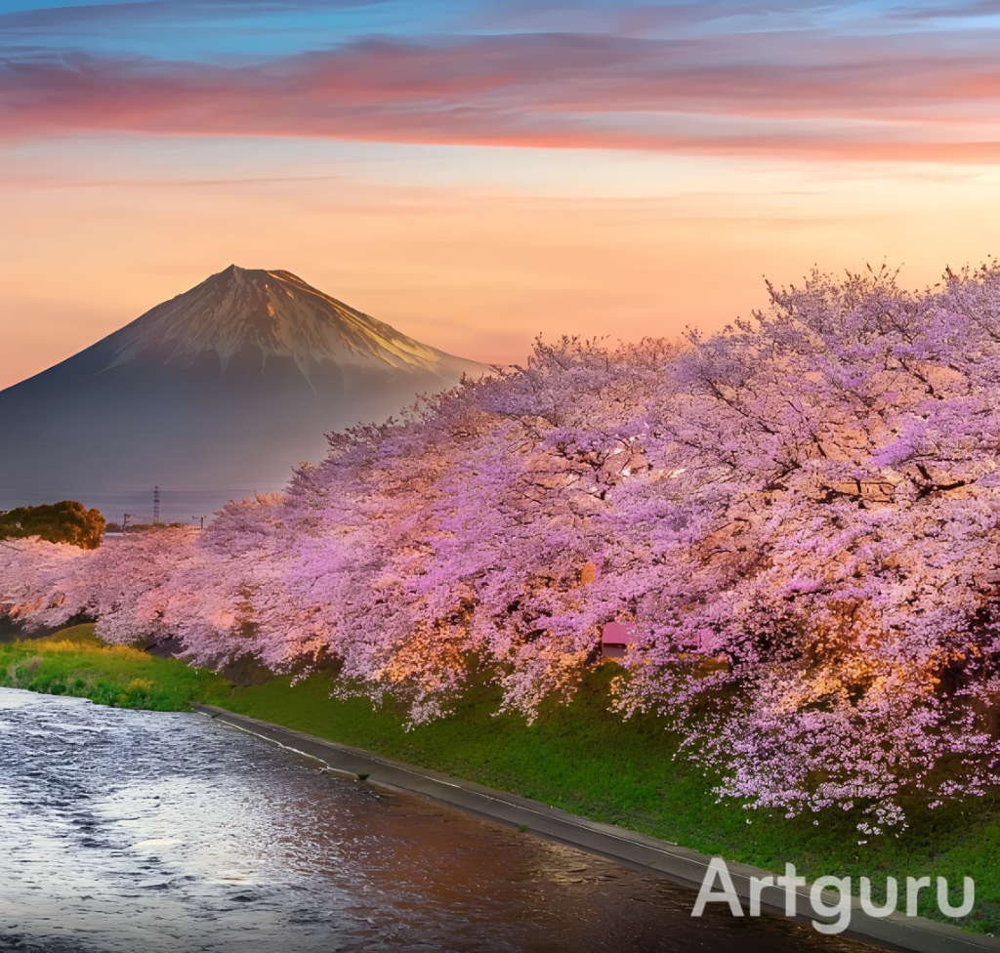
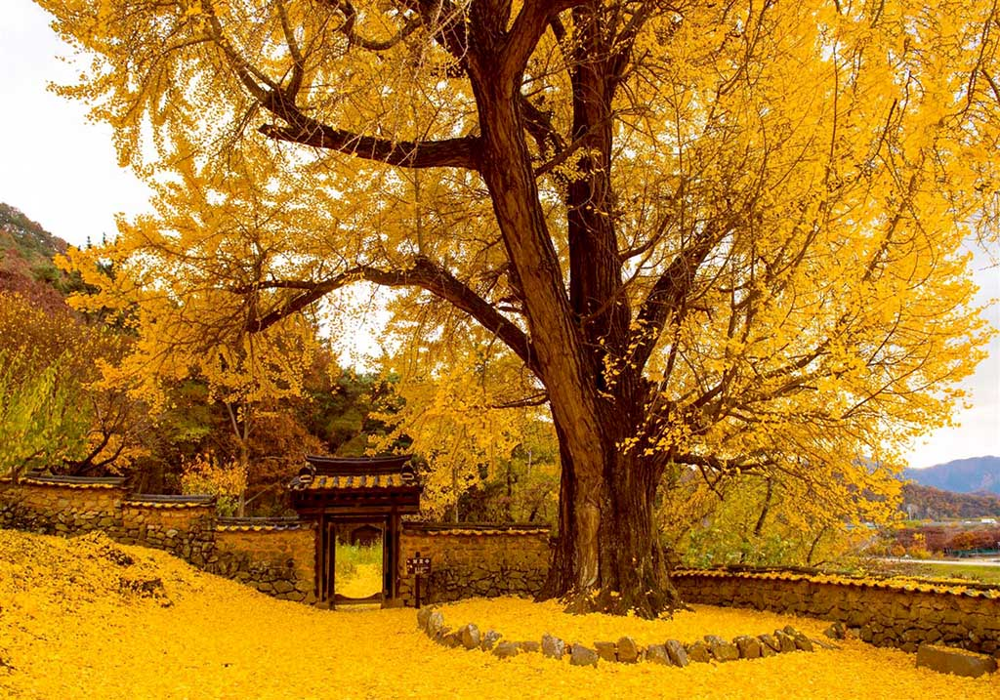

EN DIRECTO El árbol mas antiguo del mundo empieza a
floreces
El jardinero de 97 años que se encarga de proteger los árboles mas
hermosos y emblemáticos de Japón
Él es la 16ª generación de una distinguida estirpe de agricultores
que empezaron a cultivar las tierras cercanas (conocidas por sus
cerezos enanos de floración tardía) a mediados del siglo XVI.
Cuando su padre murió en 1981, él asumió el nombre de pila Tōemon,
según la tradición familiar, y tomó las riendas de Uetō Zōen, la
empresa de paisajismo que su familia fundó en 1832 y que tiene su
sede en el jardín.
Durante más de 80 años, Sano ha utilizado sus conocimientos
especializados para velar por la supervivencia de los árboles de
sakura en jardines de todo Japón y del mundo.
¿Que tiene de bello los arboles japoneses?

31/10/2025 · Sevilla · Daniel Iglesias Prieto
La belleza de los árboles japoneses no se limita a su apariencia
visual, sino que está profundamente entrelazada con la filosofía,
el arte y la sensibilidad cultural del país. Uno de los ejemplos
más emblemáticos es el Sakura o cerezo japonés, cuyas flores
rosadas florecen brevemente en primavera. Esta floración efímera
simboliza la transitoriedad de la vida, un concepto central en el
budismo y en la estética japonesa conocida como wabi-sabi, que
valora la impermanencia y la imperfección.
Además del cerezo, otros árboles como el arce japonés (momiji), el
pino negro (kuromatsu) y el bambú también son altamente valorados.
El arce, por ejemplo, ofrece un espectáculo visual en otoño con
sus hojas que cambian a tonos intensos de rojo y naranja. Esta
transformación estacional es celebrada con el momijigari, una
tradición similar al hanami (la contemplación de los cerezos en
flor), donde las personas viajan para admirar el follaje otoñal
Los jardines japoneses, donde estos árboles suelen estar
presentes, están diseñados con una precisión casi espiritual. Cada
árbol se coloca cuidadosamente para crear equilibrio visual y
emocional. Las técnicas de poda, como el niwaki, moldean los
árboles para que reflejen paisajes en miniatura, evocando
montañas, ríos o incluso estados de ánimo. Esta atención al
detalle convierte a cada árbol en una obra de arte viva
¿Que es el Ginko?

3/7/2021 · Japón · Dainler
El Ginkgo biloba es un árbol milenario considerado un fósil
viviente, famoso por sus hojas en forma de abanico y su
resistencia extraordinaria. Originario de China, el Ginkgo biloba
es la única especie sobreviviente de su familia botánica,
Ginkgoaceae, y ha existido en la Tierra por más de 290 millones de
años. Su aspecto es inconfundible: hojas bilobuladas que se
asemejan a pequeños abanicos, de color verde claro en primavera y
verano, que se tornan doradas en otoño antes de caer. Esta
transformación estacional lo convierte en un árbol ornamental muy
apreciado en parques y jardines.
Una de las características más sorprendentes del Ginkgo es su
resistencia extrema. Ha sobrevivido a eventos de extinción masiva,
y algunos ejemplares incluso resistieron la bomba atómica en
Hiroshima, brotando nuevamente poco tiempo después. Esta capacidad
de regeneración ha convertido al Ginkgo en símbolo de esperanza y
longevidad.
Además de su valor estético y simbólico, el Ginkgo biloba tiene
usos medicinales. Sus hojas contienen compuestos antioxidantes que
se han utilizado en la medicina tradicional china para mejorar la
circulación sanguínea y la memoria. Aunque su eficacia sigue
siendo objeto de estudio, es común encontrar extractos de Ginkgo
en suplementos dietéticos.